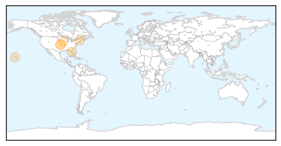
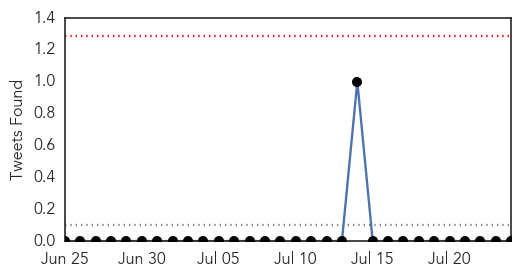
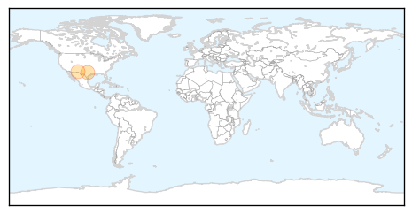

Meningitis
30-Day Web Trend
1 alerts, 0 warnings

30-Day Twitter Trend
0 alerts, 0 warnings

Article Locations
Article Confidences

Top Articles:
- 0.823
- NHRC asks for report on AES
- 0.732
- U.S. Teens Still Lag In Getting Vaccinated Against HPV
- 0.729
- U.S. Teens Still Lag In Getting Vaccinated Against HPV
- 0.729
- U.S. Teens Still Lag In Getting Vaccinated Against HPV
- 0.729
- U.S. Teens Still Lag In Getting Vaccinated Against HPV
- 0.729
- U.S. Teens Still Lag In Getting Vaccinated Against HPV
- 0.648
- U.S. Teens Still Lag In Getting Vaccinated Against HPV : Shots
Top Tweets:
-
No tweets found for Jul 24, 2014
Swine Flu
30-Day Web Trend
6 alerts, 1 warnings

30-Day Twitter Trend
0 alerts, 0 warnings

Article Locations
Article Confidences

Top Articles:
Top Tweets:
-
No tweets found for Jul 24, 2014